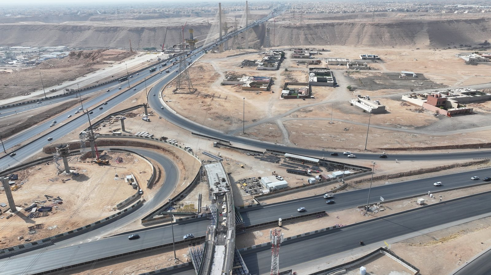
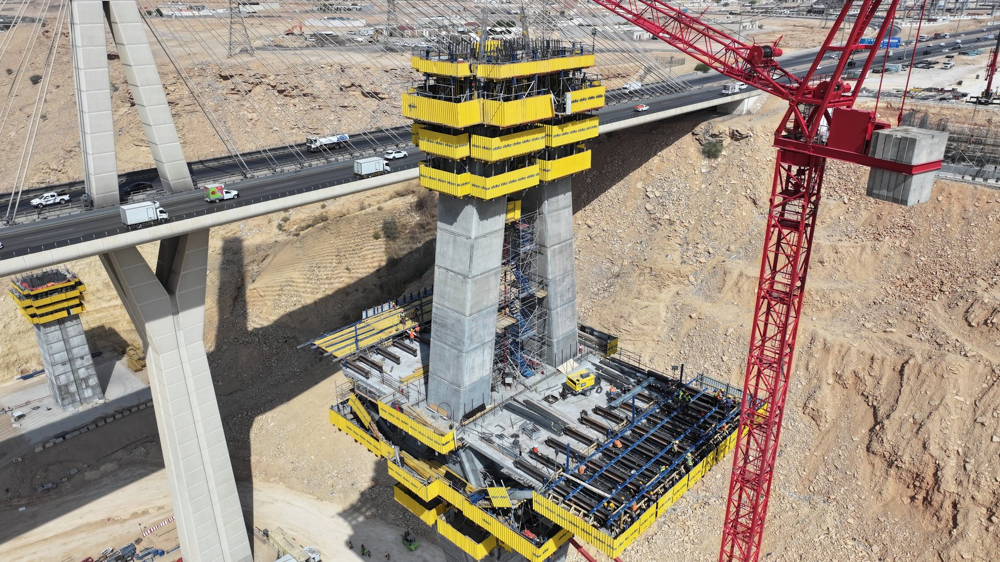
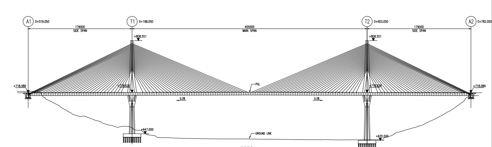

01 / SITE TECHNICAL LEAD
Wadi Laban Cable-Stayed Bridge
Joined as Independent Checking Engineer reviewing the superstructure design, then moved into leading on-site technical delivery for one of Riyadh's landmark river crossings. Now the day-to-day interface between PMC, Designer and subcontractors — clearing issues on lifting & transport sequencing, temporary post-tensioning, reinforcement/PT clashes, geometric control and shop-drawing approval, while raising Field Change Requests (FCRs) and proposing engineering resolutions for Non-Conformance Reports (NCRs).
SPAN 179 + 405 + 179 m · PYLON HEIGHT 85 + 85 m
Site Technical LeadershipPT & Rebar Clash ResolutionFCR / NCR ResolutionGeometry ControlCable-Stayed